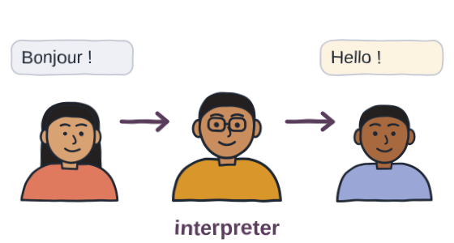
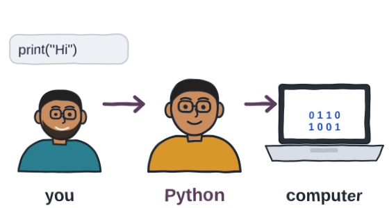
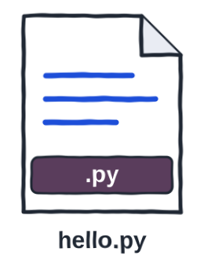
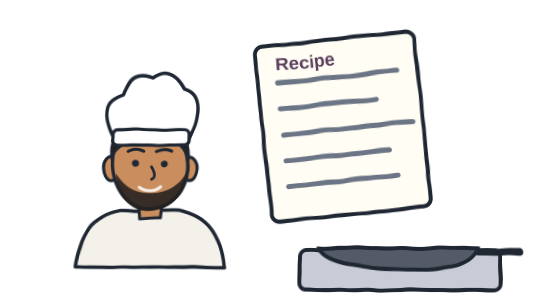
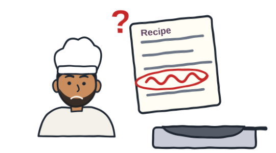
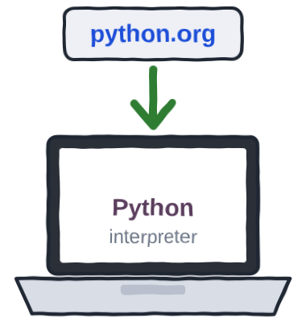

Prefer to watch? This post goes with the video (5:39). Open it on YouTube, where you can also leave a comment.
A small puzzle
Let's start with a small puzzle. Here is a program with three lines. Line one prints Hello. Line two prints Line two. And line three is missing its closing bracket.
Before you press Run, decide. What will you see? Write your guess down somewhere. Then run it.
Surprised? Hold on to that feeling. To understand it, we need to know what a Python program really is. Let's try to understand.
Python means two things
First, what is Python? When programmers say Python, they mean two things. Let's take English as an example.
English has words, and grammar rules for putting them together. "Get me water" makes sense. "Water get me" does not. Same words. One change in order, and the meaning is gone.
Python, the language, is the same. A set of words, and the rules for writing them. These grammar rules are what we call syntax.
The second thing is the interpreter. In English, an interpreter is the person who stands between two people who don't share a language.


Python's interpreter does the same job. It stands between you and the computer, like a broker. It reads what you wrote, and gets the computer to do it.
So when you press Run, you are not talking to the computer directly. You are handing your program to the interpreter.
So, what is a Python program?
It is just text. You type it, and save it in a file whose name ends in .py, like hello.py. That file is your program.

Nothing special happens while you type. A .py file is plain text, the same as a note on your phone. Everything happens when you press Run.
What happens when you press Run
Let's follow one program, from your keyboard to the screen.
When you press Run
it reads the whole file → turns it into simple steps → runs them, top to bottom
The interpreter reads the whole file, from the first line to the last, and checks the grammar. Then it turns it into small, simple steps. Only then does it start running them, top to bottom.
These simple steps are what we call bytecode. You never see them, and you don't need to.
Curious? Peek at the bytecode (optional)
Python has a tool that shows the simple steps it makes from your code. Run this, and you will see the steps for one line, print("Hello"). Don't try to learn them. Just notice that one line of yours becomes several small steps.
The careful cook
Say you are cooking from a new recipe. A careful cook reads the whole recipe first. If one sentence makes no sense, he doesn't start at all.


If the recipe reads fine, he starts at step one, and cooks step by step, top to bottom.
Python, the interpreter, is that careful cook. Reading the whole recipe first is what we call compiling. Cooking it step by step is what we call interpreting.
The puzzle, answered
Now, back to the puzzle. Line three is missing its bracket, so the grammar check fails. The interpreter doesn't run the program. Not one line runs. Nothing is printed, not even Hello.
A grammar mistake is what we call a syntax error. One anywhere in the file, and nothing runs.
Now add the missing bracket at the end of line three, and run it again.
All three lines run. The grammar check passed, so the cook started cooking.
You may read that an interpreter runs code line by line. If you guessed "Hello" and "Line two" for the puzzle, you were thinking exactly that. Many people describe an interpreter that way. For Python, it is only half the story. Python compiles the whole file first. That is why nothing printed.
How is this different from C?
So what does a compiler do in a language like C? It stops after the first job. It turns your whole program into a separate program file, an .exe on Windows. You run that file later, as many times as you like.
Python
press Run → compile → interpret
both jobs, every time you press Run
C
compile → a separate program file
you run that file later
You don't need C to learn Python. It is only here so that the word compiler means something to you, the next time you meet it.
Where the interpreter comes from
Now, where do you get this interpreter? Ideally, you download it from python.org, and install it on your computer. That download is the interpreter. The one from python.org is called CPython, because it is written in C.

But for the ease of learning, we have already put the interpreter on our website. Every Run button on this page is that same Python, rebuilt to run inside your browser. Open the page, type your code, and press Run. Nothing to install.
Python 3, and what comes with it
One more thing, before you search the internet for help. Python has two major versions, Python 2 and Python 3. Python 3 is the latest. Python 2 was retired on 1 January 2020. So we use Python 3, and skip old code written for Python 2.
Python also comes with a box of ready made tools. For dates, for maths, for files, and many more. This is what we call the standard library. Two of them, in two lines:
And outside that box, there is a public shelf of extra tools, written by other people. It is called PyPI, and it held over nine hundred thousand of them this month. We will learn to use that shelf later, when our programs need it.
The takeaway
So, what is a Python program? Just three things to remember.
- It is text, in a
.pyfile, written to Python's grammar. - The interpreter compiles the whole file first, and checks that grammar.
- Then it interprets it, step by step, top to bottom.
But this leaves you with a question. If every line follows the grammar, does that mean the program does what you wanted?
Break it, predict it, run it
This is the practice page for the video. Everything runs right here.
- In the box below, delete the closing bracket on line 3.
- Before you press Run, write down what you think will print.
- Run it.
- Press Reset. Now delete the closing bracket on line 1 instead, and try again.
If your guess was wrong, good. That is the interpreter teaching you how it reads.
One question for you: did anything print before the error? And the puzzle from the start: was your guess right? Tell me under the video.
References
Every number on this page, and where it comes from. Checked on 19 Oct 2026.
- Python Software Foundation — Python tutorial: Errors and Exceptions. There are two kinds of errors: syntax errors, found while parsing, and exceptions, found while running. link
- Python Software Foundation — Language reference: Top-level components. A whole file is passed to the interpreter and run as one complete program. link
- Python Software Foundation — Glossary: bytecode, CPython, interpreted. Python source code is compiled into bytecode, which the interpreter then runs. CPython is the implementation from python.org. link
- Python Software Foundation — Language reference: Introduction. CPython, the original and most used implementation, is written in C. link
- Python Software Foundation — dis: Disassembler for Python bytecode. The tool used in the optional peek: it shows the bytecode Python makes from your code. link
- Python Software Foundation — Python tutorial: Modules. A Python file has the suffix .py. link
- Pyodide — Pyodide 0.26.4. "A port of CPython to WebAssembly/Emscripten": the Python that runs on this page, inside your browser (Python 3.12). link
- Python Software Foundation — Sunsetting Python 2. Python 2 stopped receiving any fixes on 1 January 2020. link
- Python Software Foundation — Python tutorial: Brief tour of the standard library. The modules that come with Python, such as math and datetime. link
- Python Package Index — pypi.org, live project counter. 916,805 projects on 16 October 2026. link
- My own run — 16 and 19 October 2026: CPython 3.13.7 on Windows 11, and this website's runner. The puzzle program prints nothing: SyntaxError: '(' was never closed.